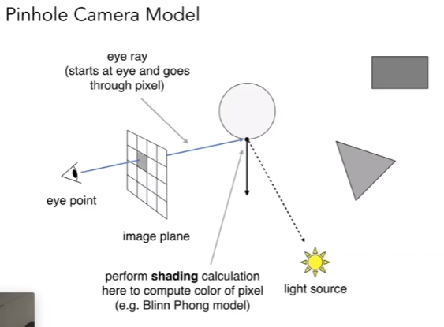
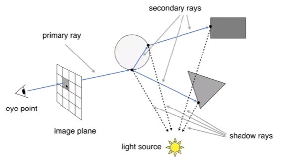
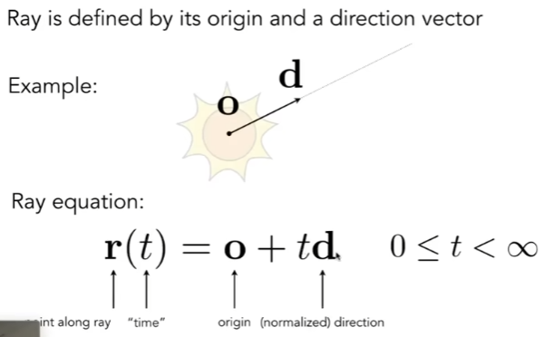
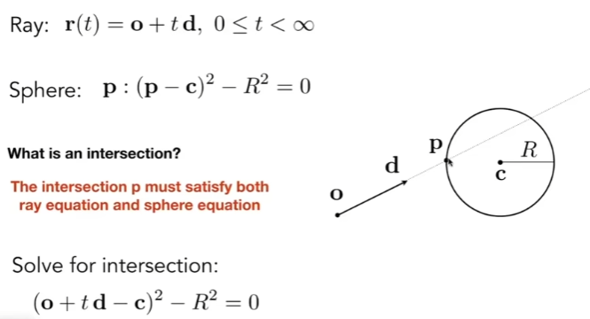
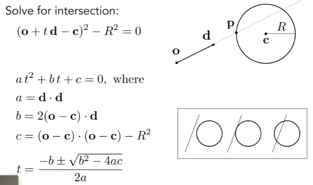
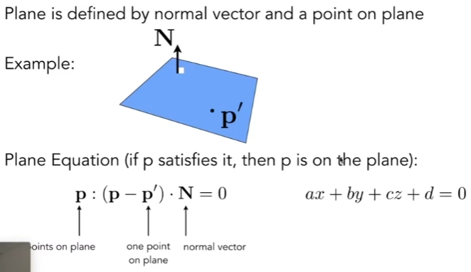
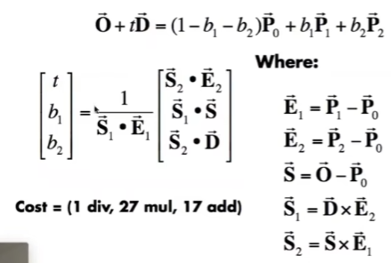
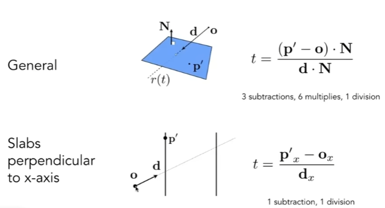
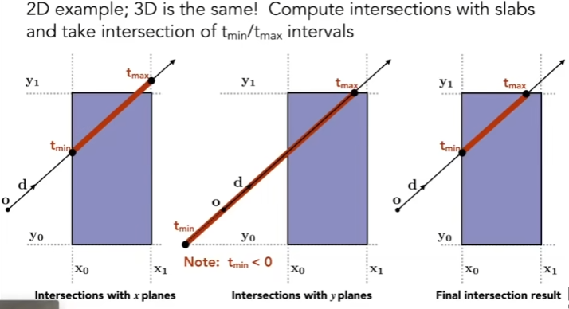
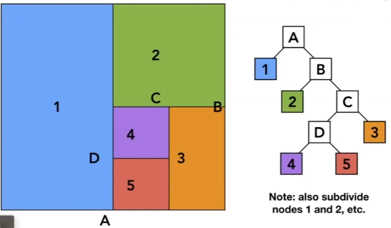

GAMES 101 L13-Ray Tracing 1 + L14-Ray Tracing 2 (Whitted-Style ray tracing)
Why Ray Tracing
Rasterization couldn’t handle global effects well
- (Soft) shadows
- Especially when the light bounces more than once
- Rasterization is fast, but quality is relatively low
- Ray tracing is accurate, but is very slow.
- Rasterization: real-time, ray tracing: offline
- ~10K CPU core hours to render one frame in production
Light Ray
- Light travels in straight lines (though this is wrong)
- Light rays do not “collide” with each other if they cross(though this is still wrong)
- Light rays travel from the light sources to the eye (but the physics is invariant under path reversal -reciprocity).
Ray Casting
- Generate an image by casting one ray per pixel
- Check for shadows by sending a ray to the light
In the figure below, first generate eye ray, and then shading pixels.

Recursive Ray Tracing
Adding up each ray’s shading result in the corresponding pixel (assume perfect reflection).

Ray-Surface Intersection

The objective is to calculate the t when the ray reach the surface.


And similarly we can calculate the t for intersection with a general implicit surface.
Ray: ,
General implicit surface p: f(p) = 0
Substitute ray equation: f(o+td) = 0
Solve for real, positive roots
Ray Intersection with Explicit Surface
PS: Ray method to check if a point is inside/outside a close shape/object (works in both 2d and 3d)
- if the number of intersections is odd, the point must be inside.
- if the number of intersection is even, the point must be outside.
Triangle is in a plane, so the problem can be converted to ray intersection with a plane, and then check if the intersection point is within the triangle.
We can define a plane with a normal vector and a point passing the plane, and write it as an equation: ax + by + cz + d = 0.

And so we can calculate the ray’s intersection with plane, and then check if the intersection is within the triangle.
We also have a faster method to compute the ray’s intersection with a triangle directly, which is called the Möller Trumbore Algorithm. Here we use barycentric coordinate to represent the point in the plane. As long as all barycentric coordinates are positive, we assure that the point is inside the triangle.

Performance Challenge
Simple ray-scene intersection exhaustively tests ray-intersection with every object to find the closest hit (with minimum t), which can be very slow.
Naive algorithm = #pixels x #objects (x #bounces)
Accelerate Ray Tracing
What if we have a complex scene with a lot of triangles? Accelerating ray tracing is important.
Bounding Volume
- Quick way to avoid intersections: bound complex object with a simple volume
- Object is fully contained in the volume, so if it doesn’t hit the volume, it doesn’t hit the object
- Test Bounding volume first, then test object if it hits
Understanding: box is the intersection of 3 pairs of slabs (3 组相对的平面围成一个 box)
Specifically:
We often use an Axis-AlignedBounding Box (AABB)(轴对齐包围盒)
i.e. any side of the BB is along either x, y, or zaxis
Why use AABB?
In this case when calculating the t parameter of a ray we avoid dot product with the normal vector of the plane (we can find an axis perpendicular to the plane directly), so that improve computation efficiency. Here, a ray is represented as .

Ray Intersection with AABB

Recall: a box (3D)= three pairs of infinitely large slabs
Key ideas
- The ray enters the box only when it enters all pairs of slabs
- The ray exits the box as long as it exits any pair of slabs
- For each pair, calculate the tmin and tmax (negative is fine)
- For the 3D box, t_enter= max{tmin}, t_exit = min{tmax}
- If t_enter < t_exit, we know the ray stays a while in the box (so they must intersect!)
However, ray is not a line, it’s single directed. And so we should check whether t is negative for physical correctness.
- If t_exit < 0?
- The box is “behind" the ray - no intersection!
- If t_exit >= 0 and t_enter < 0?
- The ray’s origin is inside the box - have intersection!
In summary, ray and AABB intersect iff (当且仅当)
t_enter < t_exit && texit >= 0
Uniform Spatial Partitions (Grids)
Steps
- Preprocess - build acceleration grids
- Find bounding box
- Create grids in the box
- Store each object in overlapping cells
- Ray - Scene Intersection
Step through grid in ray traversal order. Not traversing all grids one by one, instead we can traverse the grid like the method we use to draw a line.1
2For each grid cell
Test intersection with all objects stored at that cell # if the cell doesn't contain objects, skip it
Effect
Grid Resolution?
- One grid: No speedup.
- Too many cells: Inefficiency due to extraneous grid traversal.
- Heuristic results: #cells = Constant * #objs, C is aproximately equivalent to 27 in 3D
Reflection
When uniform grids succeed?
Grids work well on large collections of objects that are distributed evenly in size and space.
Otherwise (“Teapot in a stadium” problem), grids fail.
Spatial Partitions
Examples
- Oct-Tree 八叉树
- KD-Tree
- BSP-Tree
KD-Tree
Given a complex scene, we construct a KD-Tree first then perform ray intersection.
Data Structure

- Internal nodes store
- split axis: x-, y-, or z-axis
- split position: coordinate of split plane along axis
- children: pointers to child nodes
- No objects are stored in internal nodes
- Leaf nodes store
- list of objects
After constructing the KD-tree, we traverse the KD-Tree. If a cell is passed by the ray and is a leaf node, test intersection with all objects within it.
KD-Tree Reflection
- Given a bbox, it’s hard to check if a triangle intersects with the bbox.
- Redundant storage of objects in multiple leaf nodes if an object overlaps several cells.
Object Partitions & Bounding Volume Hierarchy (BVH)
To solve the problems in KT-Tree, we use BVH.
Building BVH
- Find bounding box
- Recursively split set of objects in two subsets
- Recompute the bounding box of the subsets
- Stop when necessary
- Store objects in each leafnode

Building BVH - Strategies
-
How to subdivide a node?
- Choose a dimension to split
Heuristic #1: Always choose the longest axis in node
Heuristic #2: Split node at location of median object (given n elements we can find the ith largest elements in O(n) with quick select algorithm)
- Choose a dimension to split
-
Termination criteria?
- Heuristic: stop when node contains few elements
PS: QuickSelect Algorithm Steps:
- Choose a Pivot:
- Select a random pivot element from the array (or use strategies like picking the last element).
- Partition the Array:
- Rearrange the array such that all elements less than the pivot are on the left, and all elements greater than the pivot are on the right.
- Track the position p of the pivot after partitioning.
- Recursive Search:
- If p is equal to i (zero-based index for the i-th largest element), the pivot is the answer.
- If , recurse into the left subarray (elements smaller than the pivot) 递归进入左子列.
- If , recurse into the right subarray (elements larger than the pivot, adjusting i accordingly).
- Base Case:
- If the array has only one element, return it as the result.
Data Structure
Internal nodes store:
- Bounding box
- Children: pointers to child nodes
Leaf nodes store
- Bounding box
- List of objects
Nodes represent subset of primitives in scene
- All objects in subtree
Pseudo Code
1 | |
Strengths
- It assures that each triangle will only be stored in one bbox.
- BBoxes are computed based on triangles, so triangles are completely contained within the bboxes. That is to say, there’s no need to concern calculate intersections between triangles and bboxes.
- KD-Trees are static structures, meaning that rebuilding or updating them for dynamic scenes (scenes with moving objects) is computationally expensive. In modern ray tracing applications like real-time rendering in games, dynamic or animated scenes are common. Alternatives like Bounding Volume Hierarchies (BVH) are more flexible and efficient because they allow incremental updates and refitting without rebuilding the entire structure.
- KD-Trees do not handle coherent rays (like those generated by primary rays or shadow rays in ray tracing) as efficiently as BVH. This is because KD-Trees subdivide space rigidly, which can result in more traversal steps for coherent rays. BVH, with its bounding volumes, can encapsulate large regions of space, allowing coherent rays to skip traversal of unnecessary regions more effectively.
BVH is now the de-facto standard in ray tracing because it is more flexible and efficient for ray traversal, especially for scenes with complex geometries or animations.
Spatial vs. Object Partition
Spatial partition (e.g.KD-tree)
- Partition space into non-overlapping regions
- An object can be containedin multiple regions
Object partition (e.g. BVH)
- Partition set of objects into disjoint subsets
- Bounding boxes for each set may overlap in space